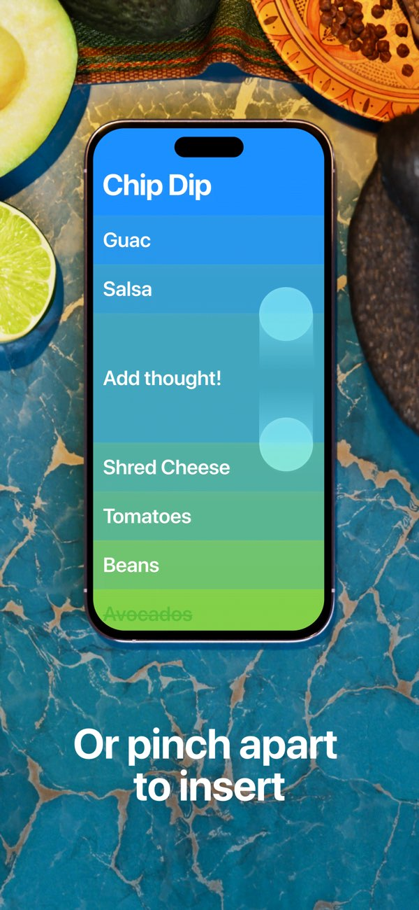
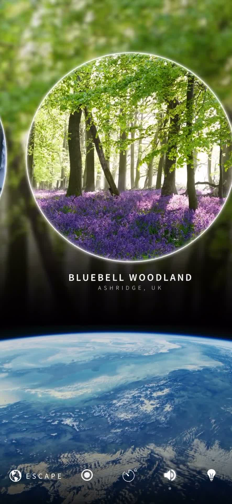
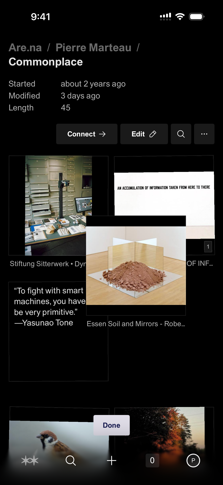
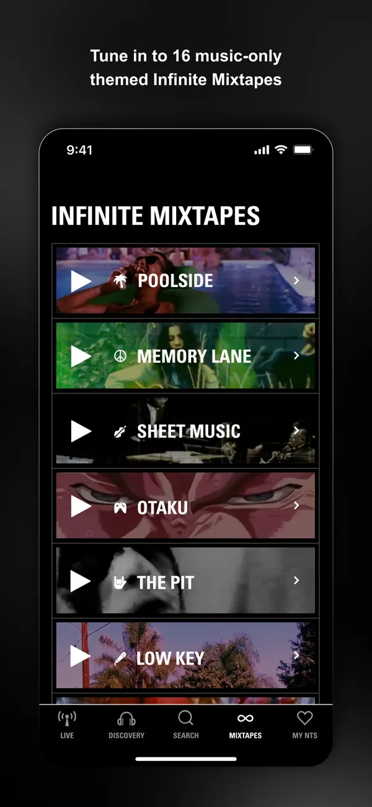
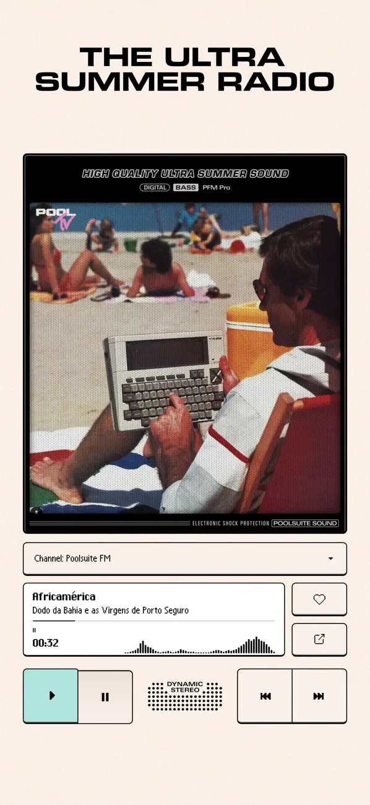
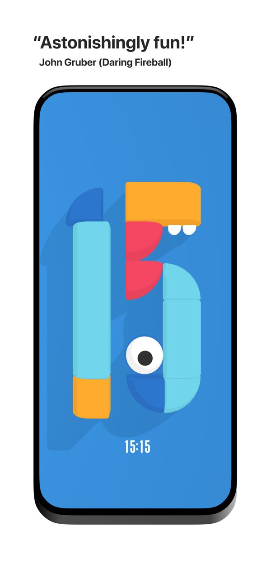

Реальные интерфейсы, прежде чем рисовать
Экраны шести выпущенных приложений. Просмотрены изображения создателей и официальные демонстрации. Это референсы устройства интерфейса, а не готовые варианты ErgoTube.


Clear
Сплошные цветные полосы. Раздвигание строк вставляет пункт между ними. Форма списка одновременно служит управлением.
Руководство создателей

Portal
Одно крупное окно в выбранное место, соседние локации появляются сбоку. В демонстрации изображение разворачивается на весь экран.
Создатели · Официальная демонстрация

Are.na
Изображения и текст собраны в коллекцию блоков. Перекрытие на кадре — состояние перемещения блока, а не постоянная хаотичная раскладка.
Официальный раздел мобильных приложений

NTS Radio
Подборки представлены плотными полосами изображения. На экране Live — две фотографии во всю ширину с крупной типографикой.
Официальные экраны · Экран Live


Poolsuite FM
Крупный визуальный центр и небольшие прямоугольные модули управления. Другой экран делает центром композиции компакт-диск.
Официальные экраны · Экран с диском


Not Boring Timer
Одна скульптурная цифра занимает почти весь экран. Вертикальный свайп задаёт минуты, касание запускает таймер.
Создатели · РуководствоДополнительно просмотрены
Endel — геометрические символы режимов и анимированная графика; Radiooooo — выбор музыки через географию и время; Bloom — исторический пример свободного звукового поля. Их изображения сохранены рядом. Референсы не доказывают, что тот же подход удобен в видеоклиенте.
Первоначальное ограничение на композицию снято пользователем: можно пересобирать экраны, сохраняя нижний док и управление одной рукой. Изменения приложения не разрешены и не выполняются.